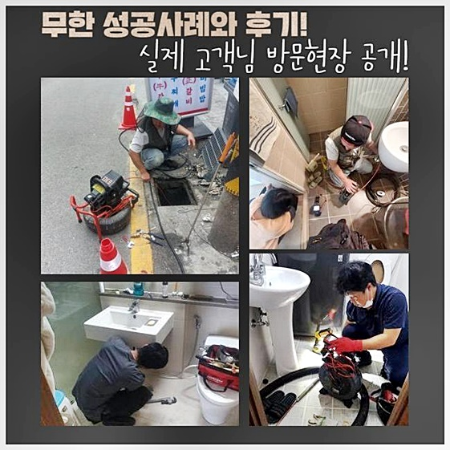
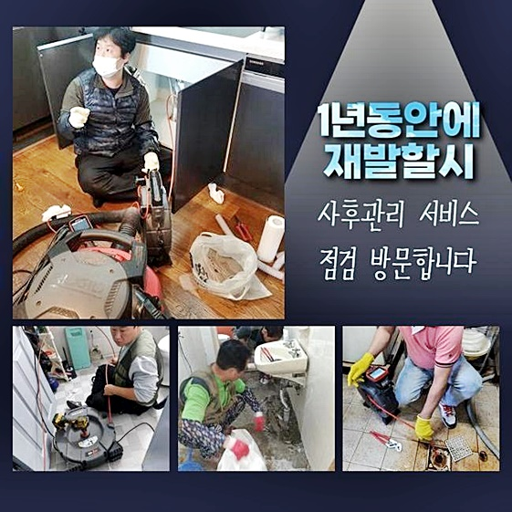
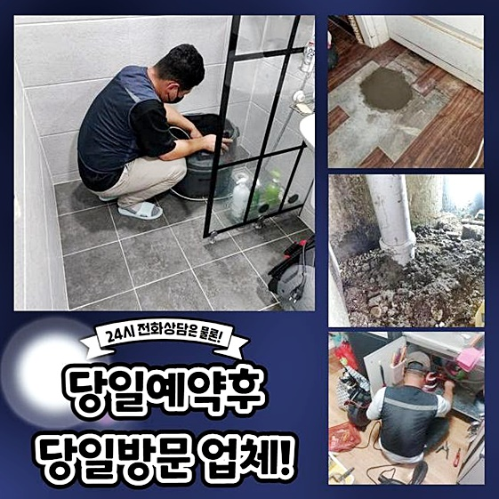
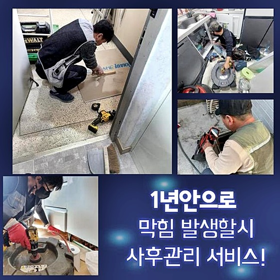
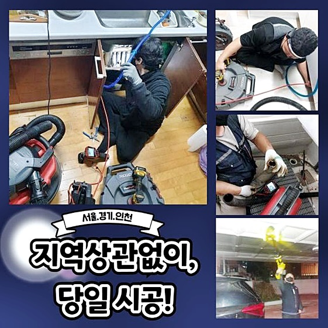
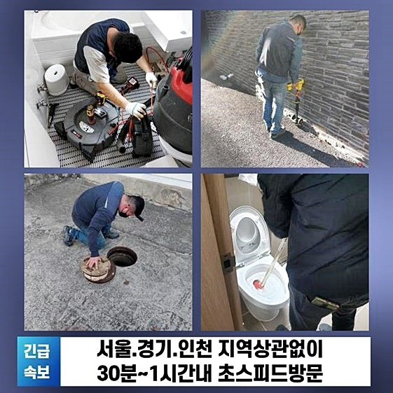

🏠 안성 창전동씽크대역류 미양면 배관뚫기 배관막힘뚫는업체
안성 싱크대막힘 전문 시공 후기

📋 작업 개요
- 위치: 안성
- 서비스 유형: 싱크대막힘, 하수구막힘, 배관막힘, 역류해결, 뚫는업체, 고압세척, 배관보수, 악취차단
- 작업 일시: 2024. 9. 26. 22:09
- 업체명: 하수구수사대 (010-5615-2118)
🔍 문제 상황
안성 창전동씽크대역류 미양면 배관뚫기 배관막힘뚫는업체
이상한 낌새도 채지 못하던 차에 느닷없이 하수구 설비의 중단이 일어난 바람에 말문까지 막히신 고객님의 호출로 찾은 곳인데요
재빠른 판단력으로 완전 복구를 해드린 장소는 단독주택이 아닌 빌라였고 피해가 막심하다고 한시라도 급히 찾아와달라 하셨어요
유선상으로 현황에 대하여 피해 내역을 알려주셨고 공용 외부 하수구 시설에서 역류해서 축축해서 못살겠다 하셨네요
하수의 역행이 생기면 안의 부패한 찌꺼기들이 물이랑 같이 올라오기에 냄새까지 유발되어 암담해 집니다
외부 기후가 축축하면 습기나 냄새로 빚어지는 고충도 하늘 무서운줄 모르고 치솟습니다
올바른 해결책이 될 과정을 얼른 수행하기 위해서 더이상 지체하지 않고 착수를 시작했습니다
설비가 오랜 세월이 갈 동안 보수가 된 적이 없다보니 물길이 차단된 듯 예측이 되었습니다
제일 추천드릴 수 있는 방향은 정해진 주기로 전문가의 진단 서비스를 받고 비정상적인 소견이 도출되면 세척까지 원큐에 진행하는 겁니다
멀쩡하게 물이 잘 빠진다면 시설을 쓰시는 분들은 세심한 설비 건강 체크는 그다지 주목하시진 않습니다
가정집 내부의 하수구도 물때나 음식물같이 여러가지 쓰레기들이 은근슬쩍 물이랑 같이 배수로 아래로 내려가곤 합니다
사이즈부터 남다른 옥외 하수도는 바깥에 돌아다니는 각종 쓰레기들이 너도나도 유입되고 자잘한 조각이 아닌 커다란 물체도 내부로 자주 들어갑니다
비바람이 치는 날에는 더욱 비닐봉지나 모래같은 각종 잔해가 대량 유입되어 물빠짐이 진행되지 않아서 트러블이 생겨요

🔎 원인 분석
💡 전문가 진단: 정밀 진단 장비를 사용하여 슬러지의 고착 여부를 판명하고 타격/세척 작업을 실시했습니다.
그러므로 정기적인 옥외시설 점검으로 고장이 발생하는 확률을 절대적으로 내려서 미연에 방지해야 하겠죠
옥외 쪽을 관찰을 해봤더니 세심하게 주의해야 하는 물건들이 한둘이 아니었습니다
하수구 그레이팅 바로 옆에는 진흙 덩어리도 뭉쳐있었고 바닥에 떨어진 나무 이파리도 사방에 퍼져있었어요
갈곳을 잃은 이물질들은 공기 중을 떠돌다가 충분히 하수관 입구로 스며들어갈 수가 있습니다
이같은 일이 누적되다보면 하수구를 온통 채워버린다면 가정에서 발생한 오폐수들이 방출되지 못하고 갈 길을 잃습니다
보통 짐작하는 것보다 물은 축적되면 중량이 엄청나게 묵직해지고 압박을 줘서 지장을 주곤 합니다
싱크대나 욕실 하수구에서 중단을 빚는 것과는 다르게 야외 설치된 하수관의 불능이면 가벼운 원리로 돌릴 수 있는 장비들로는 성과가 미진할 수 있습니다
넓은 지대를 커버하는 힘을 장착한 첨단 장치로 오염원을 척결해야 합니다
오늘 현장의 특성은 전용 카메라의 모니터링 없이도 육안으로도 충분히 내부를 파악하기 쉽긴 했습니다
출입구가 협조하지 않았기에 고개만 넣어서 보더라도 오염물이 누적된 모습이 관찰됐습니다
어마어마한 양으로 불어난 오염물들이 안쪽에 접착되어서 배관을 압박할 수도 있는 매우 위태로운 형국이었습니다
아무리 견고한 자재로 제작되었다 해도 단단하게 돌처럼 굳은 오물들은 잔 기스를 만든다거나 한 섹션이 붕괴될 위험도 있었어요
설비의 내부 현황을 빠짐 없이 살펴보니 전반부의 세정 작업을 추진할 필요성이 있었네요
즉각 실시하는 것이 아니고 관로 관측기를 속으로 넣어서 깊숙한 일면까지 봐줬습니다

🔧 작업 과정
특히나 거대한 야외 하수구는 눈으로 체크를 할 수 있는 분야 그밖의 지점들도 꼼꼼히 진단을 해봐야 합니다
발견을 해내지 못하고 지나간 소규모의 흔적이 발단이 돼서 유사한 장애물이 다시 반복될 염려가 되기 때문입니다
정확성을 위해 내시경 주입을 한 결과로 더 깊은 영역에서도 여러 형태의 물질이 포개져 있었네요
각종 쓰레기와 담배꽁초들이 엉켜있고 원래 형상을 판별하지도 못할 쓰레기들이 한데 어우려져서 의심하고 체크를 해줬기에 결함을 방지할 수 있었습니다
빌딩 내외부의 하수도 시설이 마비되어 버린다면 점도가 있는 기름기 어린 물질을 파쇄하는 스케일링 장비인 샤프트를 주로 이용을 하고 있습니다
이번에 처리해야 할 과제는 이런 샤프트 장치로 수습을 해주기에는 비효율적일 것이라 여겨졌습니다
긴 와이어가 있지만 과하게 깊고 폭도 굉장히 넓어서 석션으로 개별적으로 흡입하기도 난해하다고 판단됐습니다
그러므로 고압수를 발사하는 기기로의 제거를 시행해야만 했으며 많은 옥외 하수구 시설에서는 잦은 빈도로 쓰고 있습니다
각 방문지 마다 설비가 특이하기에 궁합이 맞는 최적의 기기를 복합적으로 쓸 줄 알아야 합니다
장착된 하수구에 대한 정보를 예리하게 꼬집어내고 잘 보수하는 탁월한 솜씨를 가진 전문가의 지원을 받아야만 합니다
강력한 세기의 물대포를 목표를 조준하고 쏘아야 하는 작업을 담당하게 된다면 빠른 판단능력과 역량이 있어야 무사히 마무리할 수 있습니다
거대한 덩어리로 뭉쳐있는 곳이나 제대로 건조된 구간은 높은 수압으로 올리고 남은 구간은 강도를 살짝 저하시켜서 안전한 환경을 지속해야 합니다
옥외에 마련된 하수관은 지속적인 돌봄이 부재한다면 잦은 빈도로 고장이 생깁니다
각종 먼지들도 많이 날리고.워낙 토사가 많이 유출되고 외부 기후같은 부분에도 흔들릴 수 있기 때문이죠
가정 내 배수구는 늘 이물질이 들어가지 않게 철저히 살필 수 있지만 외부에 설치된 하수시설은 아무리 자주 살핀다 해도 알게모르게 유실되는 오물을 완전히 억제할 수는 없는 일이니까요
사이즈 자체도 실내 설비의 수십 배는 될테니 그만큼 체류 중인 유해물도 당연히 크기와 비례하여 상상을 초월할 정도니까요
내부 세정을 할 때는 이만하면 됐다하며 대강 거치지 않고 계속해서 끝까지 세정을 해줘야 합니다
제법 내부가 뚫려서 물길이 트인다고 해서 책임지고 도맡은 작업에 대하여 성급히 마감하지 않습니다
고여있던 내부 잔수만 빠져나가게 하는 것만으로는 소용이 없기에 잔재가 확실히 없어질 때 까지 부족한 분야는 없나 확인합니다
설비를 새것처럼 갱신하는 것을 궁극적 목적으로 설정하기에 재발되는 상황이 일어나지 않도록 작업에 온 힘을 쏟습니다
하수관은 담당을 맡은 업체에 따라 발휘되는 솔루션에 따라서 시공의 급이 나뉘게 되는데요


✅ 작업 완료
그저 물이 빠지는 지만 테스트를 하는 것이 아니라 다른 부위까지 추가로 살펴보고 저희의 절차를 마무리 짓고 있거든요
매 과정에서 흘려보내는 구간이 남아있지 않도록 초기와 같은 집념을 유지하여 최적의 상태인 결과물을 고객님께 다시 안겨드립니다
고압 세척과정에서는 오염물의 조각들이 주변부로 흩뿌려지기 때문에 정화작업을 거친 근처 정돈도 최종적으로 손봐드리고 있습니다
하수구 설비는 은근히 복잡하며 작업지마다 형태나 막혀있는 상태가 모두 다릅니다
그러므로 철저한 준비력을 바탕으로 오류를 잘 파악하고 알맞게 들어가야 할 작업을 선정하는 센스가 들어가야 합니다
하수로 인한 고통을 겪지 않고 안정적으로 하수처리 시설을 자유롭게 쓰실 수 있게 시간 상관없이 달려갈게요!




⚠️ 주방 싱크대 배관 막힘 예방 수칙
- ✅ 기름기가 묻은 식기나 프라이팬은 설거지 전 키친타올로 반드시 기름때를 닦아내세요.
- ✅ 주기적으로 싱크대 개수대에 뜨거운 물을 가득 받아 한 번에 내려 배관 내부 기름을 씻어내세요.
- ✅ 배수구 거름망을 미세한 필터로 사용하시고 음식물 찌꺼기가 틈으로 새어 들지 않게 관리하세요.
- ✅ 베이킹소다와 식초를 뜨거운 물과 함께 일주일에 한 번씩 부어주면 배관 살균과 막힘 예방에 좋습니다.
💡 핵심 정리
- 확실한 장비 작업(내시경 점검 및 샤프트 스케일링)으로 원인을 뿌리 뽑습니다.
- 작업 후 1년 이내에 동일한 부위 재발 시 100% 무상 A/S 서비스를 보장합니다.
- 서울 · 경기 · 인천 전 지역에 24시간 언제든 긴급 출동할 수 있도록 항시 대기 중입니다.
❓ 자주 묻는 질문 (FAQ)
🚨 안성 싱크대막힘 문제로 고민이신가요?
정확한 원인 진단과 확실한 시공으로 재발 없는 해결을 약속드립니다.
24시간 긴급 출동 | 서울 · 경기 · 인천 전지역 | 1년 내 재발 시 무상 A/S